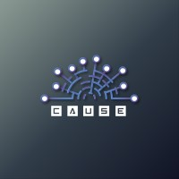
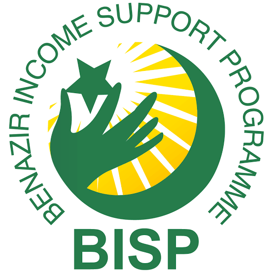
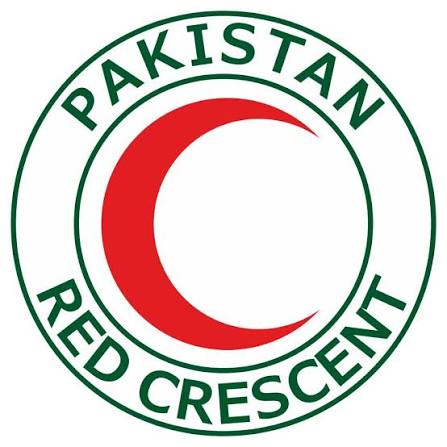

Work & Leadership
My professional journey, organizational leadership, and community service impact
Professional & Leadership Experience

Executive Leadership & Operations
CAUSE Society — Capital University of Science & Technology
Joint Secretary
Nov 2025 — Jun 2026
Vice President Operations
Apr 2025 — Nov 2025
General Secretary
Sep 2024 — Apr 2025
- Executive & Operational Leadership: CAUSE Society mein President, Joint Secretary, aur VP Operations ke tor par leadership roles sambhale; multi-departmental teams ko lead kiya aur academic calendar, recruitment, aur society governance ki strategic planning ki.
- Large-Scale Event Execution: Technical workshops, career seminars, aur flagship Hackathon '25 ki end-to-end operational logistics, schedule management, aur on-ground execution ko lead kiya.
- Stakeholder & Resource Management: Faculty advisors, external sponsors, aur student committees ke sath liaiasing ki taake funding, venue management, aur high-impact event execution smooth tareeqay se mukammal ho sake.

IT / MIS / Cybersecurity Intern
Benazir Income Support Programme (BISP HQ), Islamabad
- Rotated across IT, MIS, and Cybersecurity wings, assisting technical teams with network operations, system troubleshooting, installations, and server infrastructure monitoring.
- Contributed to the development of an Employee Management System using ASP.NET Core and SQL Server, implementing database architecture, data validation, CRUD features, and dynamic reporting modules.
- Built structured district-wise and department-wise reporting systems to assist executive management in data-driven decision-making.
- Assisted in production environment tasks, including application deployment on IIS and database configuration.
- Designed a real-time Fortinet Firewall monitoring dashboard utilizing the Elastic Stack (Elasticsearch & Kibana).
Volunteer Work & Community Service

Community Service Volunteer
Pakistan Red Crescent Society, Islamabad
- Participated in the Volunteer Internship Service (VIS) program centered on community outreach, health awareness, and emergency management.
- Co-designed and delivered school-based awareness sessions on disaster preparedness, incorporating presentation decks, visual aids, pamphlets, and practical first-aid demonstrations.
- Formulated project proposals, progress reports, and final performance presentations for evaluation by PRCS supervisors.
Event Management Volunteer
iSENcE International Conference 2025 (CUST)
- Supported on-ground logistics, venue coordination, and event planning for the national conference.
- Managed session timings and attendee registration while handling real-time communication between speakers and organizing committees.